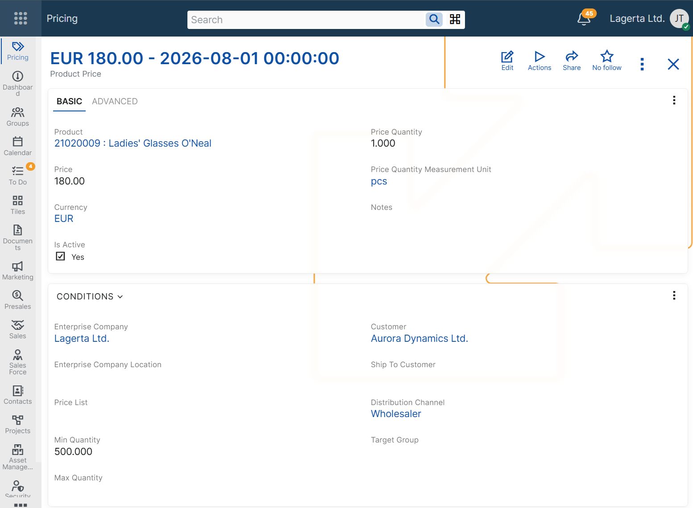
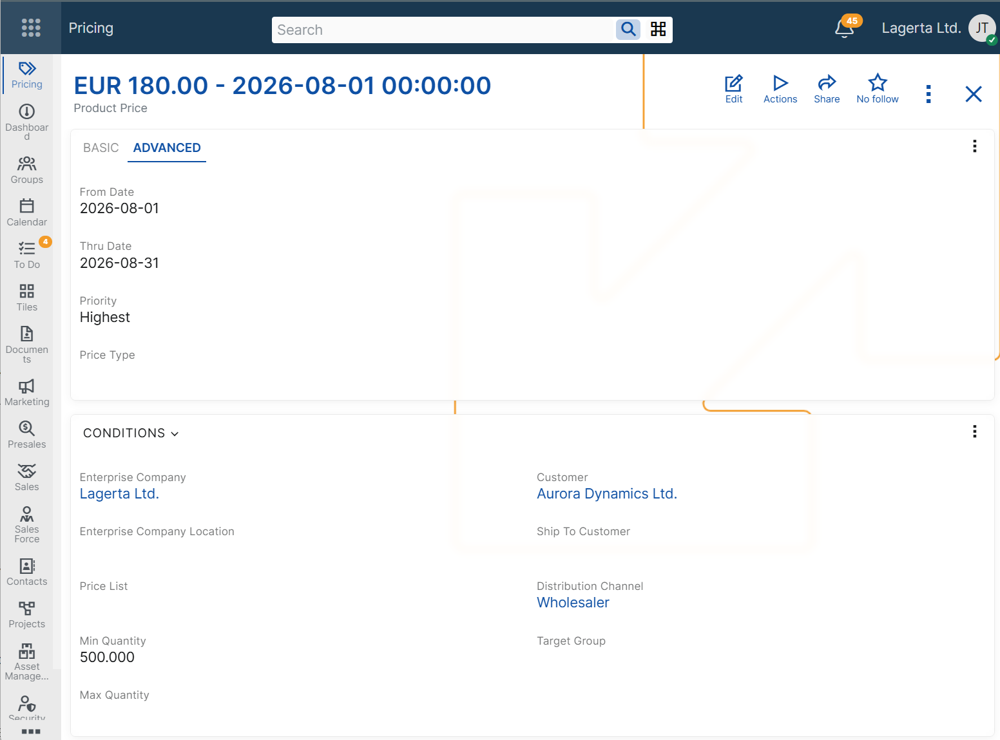

Configuring product prices
Product prices are configured by defining a product price record and the conditions under which it can be applied.
A product can have multiple product price records at the same time, each with its own applicability conditions. When more than one product price matches the current context, ERP.net determines the final price according to the product price determination algorithm.
For more information, see Determine product price.
When a product price is applied in a sales order line, the selected product price record is loaded in the Product Price field. ERP.net then calculates the value in the Unit Price field based on that product price record.
Price definition
A product price record includes the following basic fields:
- Product
- Price
- Currency
- Price Quantity
- Price Quantity Measurement Unit
These fields define the product being priced, the price amount, the currency, and the quantity and measurement unit for which the price is valid.
The Price field stores the price for the configured Price Quantity and Price Quantity Measurement Unit. When the product price is applied in a sales order line, ERP.net calculates the corresponding Unit Price value according to the quantity base defined in the product price and the quantity measurement unit used in the line.
Different product price records can specify, for example:
- 5.00 USD for 1 piece
- 10.00 EUR for 3 packs
If a product price record defines 50.00 EUR for 10 pieces, the resulting Unit Price in the sales order line is 5.00 EUR per piece.
Applicability conditions
In addition to the base price definition fields, a product price record can include applicability condition fields. These fields limit when the price can be considered during sales order processing.
Customer context
Use these conditions when the price depends on customer-related information in the sales order.
- Customer – limits the price to sales orders for a specific customer.
- Customer Type – limits the price to sales orders for customers of a specific type.
- Ship To Customer – limits the price to sales orders with a specific ship-to customer.
- Target Group – limits the price to sales orders for customers in a specific target group.
Commercial context
Use these conditions when the price depends on the commercial setup of the sales order.
- Price List – limits the price to sales orders that use a specific price list.
- Distribution Channel – limits the price to sales orders in a specific distribution channel.
Quantity context
Use these conditions when the price depends on the ordered quantity.
- Min Quantity – the minimum quantity in the sales order line for which the price can be considered.
- Max Quantity – the maximum quantity in the sales order line for which the price can be considered.
Organizational context
Use these conditions when the price depends on the organizational context of the sales order.
- Enterprise Company – limits the price to sales orders made from a specific enterprise company.
- Enterprise Company Location – limits the price to sales orders made from a specific enterprise company location.

Validity context
Use these conditions when the price must be available only during a specific period or only while the record is enabled.
- From Date – limits the price to sales orders whose document date is on or after this date.
- Thru Date – limits the price to sales orders whose document date is on or before this date.
- Active – indicates whether the product price record is enabled for use.
Note
A product price record must be unique for its combination of product and pricing context fields, such as price list, customer, ship-to customer, target group, validity period, quantity range, price type, and enterprise company. As a result, ERP.net does not allow duplicate product price records for the same pricing context.
Priority and price types
When multiple product prices are applicable, ERP.net uses priority rules to determine which price is selected. Some of these rules are controlled by fields in the product price record.
These fields include:
- Priority – ranks applicable prices.
- Price Type – adds an additional priority condition.
If a product price record has a defined Price Type, it takes precedence over applicable prices without a price type. If more than one applicable price has a defined price type, the product price with the lower Ordinal Position of its price type has higher priority.
For more information, see Price Types and Determine product price.

Matching configured conditions
A product price can be considered only when the values in the sales order match the configured applicability conditions.
If a product price record contains multiple applicability conditions, all of them must match for the price to be considered.
For more information about how ERP.net selects the final price when multiple product prices are applicable, see Determine product price.
Example scenarios
The following examples show how product prices can be configured for different business needs and how the configured conditions affect the values loaded in the Product Price and Unit Price fields of a sales order line.
Note
The following examples assume that no other applicable product price with higher precedence exists.
Price for a specific customer
Use this scenario when a product has a negotiated price for one customer only.
Example configuration
Product Price: Product Price A
Product: Product A
Customer: Customer A
Price: 48.00
Currency: EUR
Price Quantity: 1
Price Quantity Measurement Unit: pieces
Sales Order context
Customer: Customer A
Product: Product A
Quantity: 1
Quantity Unit: pieces
Result
Unit Price: 48.00 EUR
Product Price: Product Price A
Price by price list
Use this scenario when the same product must have different prices in different price lists.
Example configuration
Product Price: Product Price B
Product: Product A
Price List: Price List A
Price: 52.00
Currency: EUR
Price Quantity: 1
Price Quantity Measurement Unit: pieces
Sales Order context
Price List: Price List A
Product: Product A
Quantity: 1
Quantity Unit: pieces
Result
Unit Price: 52.00 EUR
Product Price: Product Price B
Price by distribution channel
Use this scenario when the product price depends on the channel through which the sale is made.
Example configuration
Product Price: Product Price C
Product: Product A
Distribution Channel: Distribution Channel A
Price: 50.00
Currency: EUR
Price Quantity: 1
Price Quantity Measurement Unit: pieces
Sales Order context
Distribution Channel: Distribution Channel A
Product: Product A
Quantity: 1
Quantity Unit: pieces
Result
Unit Price: 50.00 EUR
Product Price: Product Price C
Price by quantity range
Use this scenario when the product price depends on the ordered quantity.
Example configuration
Product Price: Product Price D
Product: Product A
Min Quantity: 10
Max Quantity: 50
Price: 45.00
Currency: EUR
Price Quantity: 1
Price Quantity Measurement Unit: pieces
Sales Order context
Product: Product A
Quantity: 12
Quantity Unit: pieces
Result
Unit Price: 45.00 EUR
Product Price: Product Price D
Price defined for a specific quantity and measurement unit
Use this scenario when the product price is defined for a specific quantity and measurement unit.
Example configuration
Product Price: Product Price E
Product: Product A
Price: 50.00
Currency: EUR
Price Quantity: 10
Price Quantity Measurement Unit: pieces
Sales Order context
Product: Product A
Quantity: 20
Quantity Unit: pieces
Result
Unit Price: 5.00 EUR
Product Price: Product Price E
Time-limited price
Use this scenario when a product price must be valid only during a specific period.
Example configuration
Product Price: Product Price F
Product: Product A
From Date: 2026-06-01
Thru Date: 2026-06-30
Price: 47.00
Currency: EUR
Price Quantity: 1
Price Quantity Measurement Unit: pieces
Sales Order context
Document Date: 2026-06-15
Product: Product A
Quantity: 1
Quantity Unit: pieces
Result
Unit Price: 47.00 EUR
Product Price: Product Price F
Price with combined conditions
Use this scenario when a product price must apply in a more specific business context.
Example configuration
Product Price: Product Price G
Product: Product A
Customer: Customer A
Distribution Channel: Distribution Channel A
Min Quantity: 10
Price: 44.00
Currency: EUR
Price Quantity: 1
Price Quantity Measurement Unit: pieces
Sales Order context
Customer: Customer A
Distribution Channel: Distribution Channel A
Product: Product A
Quantity: 12
Quantity Unit: pieces
Result
Unit Price: 44.00 EUR
Product Price: Product Price G
Negative examples
The following examples show cases in which a product price is not considered because the sales order context does not match the configured applicability conditions.
Customer mismatch
This scenario shows that a customer-specific product price is not considered for a different customer.
Example configuration
Product Price: Product Price H
Product: Product A
Customer: Customer A
Price: 48.00
Currency: EUR
Price Quantity: 1
Price Quantity Measurement Unit: pieces
Sales Order context
Customer: Customer B
Product: Product A
Quantity: 1
Quantity Unit: pieces
Result
This product price is not considered.
Quantity outside range
This scenario shows that a quantity-based product price is not considered when the ordered quantity is outside the configured range.
Example configuration
Product Price: Product Price I
Product: Product A
Min Quantity: 10
Max Quantity: 50
Price: 45.00
Currency: EUR
Price Quantity: 1
Price Quantity Measurement Unit: pieces
Sales Order context
Product: Product A
Quantity: 5
Quantity Unit: pieces
Result
This product price is not considered.
Related configuration
In addition to the product price record itself, product price configuration can also depend on related pricing components.
- Price Types – define an additional priority condition used when more than one product price is applicable.
- Price Lists – define reusable pricing groupings for different commercial contexts.